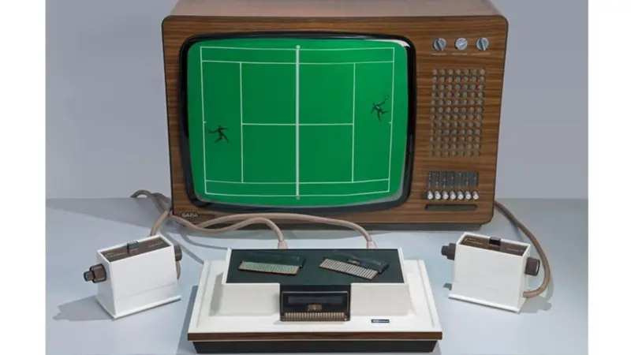
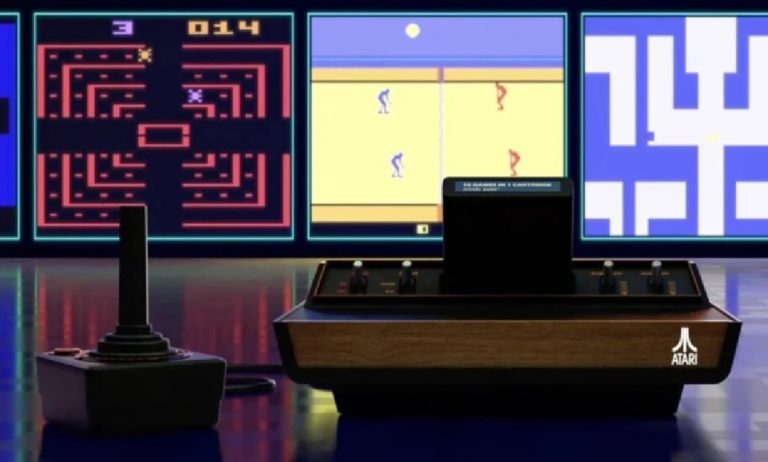
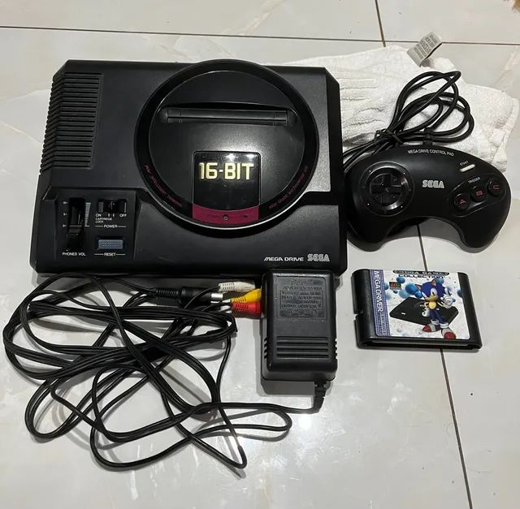
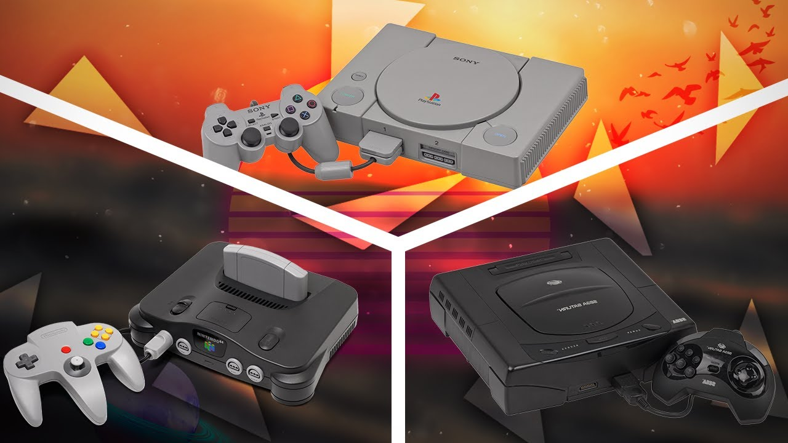
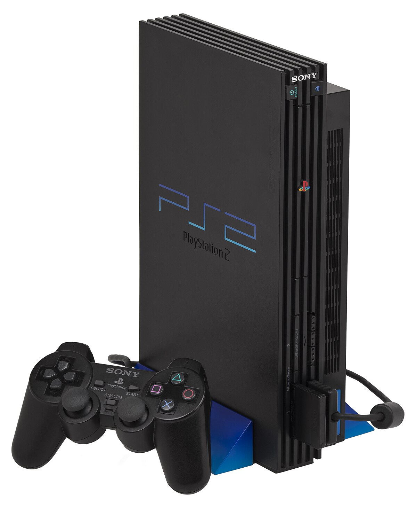
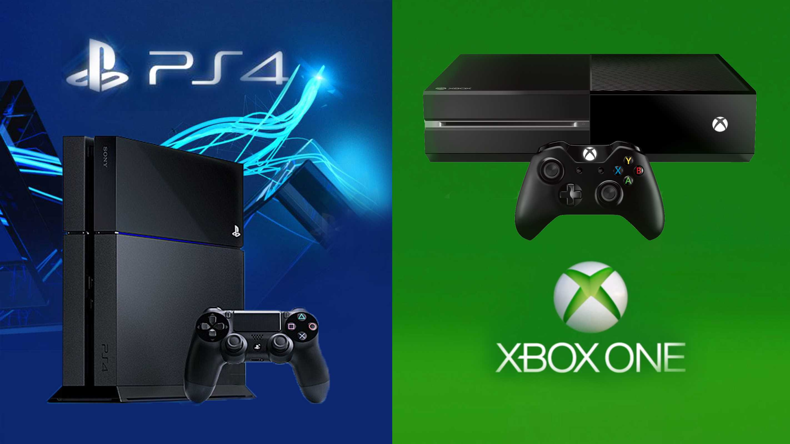
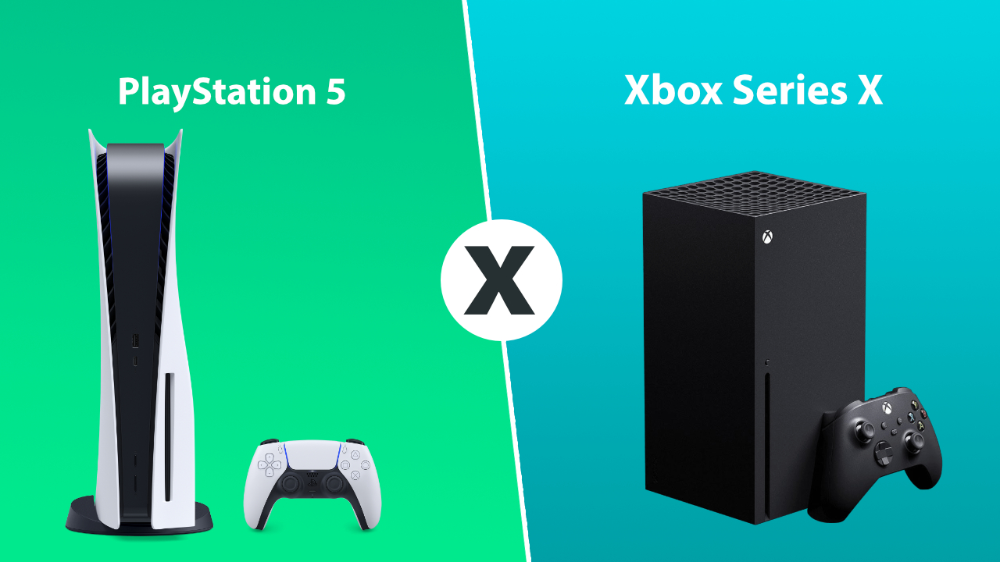

A evolução dos jogos desde 1990 até 2020
Com o passar dos anos, é visível que o desenvolvimento de consoles e games passam por diversas inovações tecnológicas. Desde os primórdios dos píxeis, até os gráficos hiper-realistas em jogos modernos, os marcos, tendências e histórias por trás desta indústria, sempre estão em constante evolução.
Primeira geração (1972 a 1978):
No ano de 1972, nascia o primeiro console de videogame lançado em todo mundo, conhecido como Magnavox Odyssey. Ralph Baer, responsável pela idealização do projeto, tinha o objetivo de criar uma máquina que conseguisse interagir com uma televisão. O console era bem simples, os jogos não eram coloridos e não possuíam som. Uma curiosidade bastante interessante é que para melhorar a experiência dos jogadores, era preciso colocar um filtro plástico na frente da TV — isso era feito para o usuário conseguir ter uma ilusão de linhas, contornos e cores durante a jogatina. Para conseguir jogar os 27 jogos disponíveis em card games, era preciso utilizar um controle que tinha dials ao invés de botões ou sticks, como estamos habituados. Fora isso, havia apenas um botão no controle, a sua função era apenas a de reiniciar o game. Outra curiosidade é que o Odyssey foi um dos primeiros consoles a possuir periféricos.
Segunda geração (1978 a 1984):
Essa é a geração que introduziu os famosos cartuchos em videogames. Essa tecnologia usada na época virou um padrão em diversos consoles das próximas gerações, se estendendo por duas décadas aproximadamente. Os principais consoles lançados foram: Atari 2600, Agnavox Odyssey² e Mattel Intellivision.A evolução dos gráficos quando comparados a primeira geração fizeram os games da época se popularizarem: jogos como Laser Blast, Space Invaders e o famoso Pac Man reuniam diversas pessoas sentadas na frente do sofá para jogar. No entanto, o sucesso desses consoles foi tão absurdo que diversas empresas se segmentaram no mercado para conseguir conquistar uma pequena fatia dos lucros. Os jogos começaram a ficar mais baratos e, ao mesmo tempo, ruins já que as empresas tinham pressa para lançar os games no menor tempo possível.

Terceira geração Master System e NES (1984 a 1990):
Após uma grande crise na indústria dos games, em 1983, as grandes empresas japonesas começaram a introduzir os videogames de 8 bits, com o principal objetivo de retornar com tudo no mercado. E foi o que aconteceu com a Sega e a Nintendo, grandes nomes conhecidos até os dias de hoje.O salto de tecnologia da época foi marcado por consoles que tinham processadores mais rápidos, conhecidos como 8-bit. Além disso, os gráficos começaram a evoluir, os — até então — bonecos em formato quadrado, começaram a ser mais detalhados e bonitos. Ah, e nessa fase, as cores e os sons estavam mais aperfeiçoados do que nunca.
Dentre os principais jogos da época, destaca-se:
Prince of Persia;
Ayrton’s Senna Super Monaco GP;
E o, não menos importante, Sonic The Hedgehog, que foi um grande sucesso e ainda continua sendo amado por milhares de fãs em todo mundo.
Quarta geração Megadrive e Super Nintendo (1990 a 1996):
A 4ª geração ficou bastante conhecida pela grande disputa de mercado onde a Sega e a Nintendo brigavam pelo domínio de vendas. Os cartuchos estavam ficando cada vez mais caros e escassos, foi aí que os primeiros consoles baseados em CD foram instaurados na indústria.O Megadrive e o Super Nintendo foram os consoles que mais marcaram a era 16-bit. Eles contavam com grandes títulos que criaram uma legião de fãs. Os mais conhecidos do lado da Nintendo foram Super Mario, The Legend of Zelda, Donkey Kong e outros jogos de plataforma. Já a Sega contava com outros títulos como Streets of Rage, Alex Kidd, etc.

Apesar de terem especificações simples, os consoles tinham uma grande diferença de hardware. O Megadrive tinha melhores processadores com um CPU três vezes mais rápido que o Super Nintendo, o que resultava em um maior desempenho em alguns títulos.
Quinta geração: o início de jogos 3D (1996 a 1999):
A quinta geração de consoles de videogame, também conhecida como a era dos 32-bits e 64-bits, foi um período revolucionário na história dos jogos eletrônicos. Esta geração, que se estendeu de 1993 a 2002, é particularmente lembrada pelo início dos jogos em 3D.Este período foi marcado por uma intensa competição no mercado de videogames e pela introdução de inovações tecnológicas que moldaram o futuro dos jogos eletrônicos. 
Sexta geração Playstation 2 e Xbox (1999 a 2004):
Nessa geração, os cartuchos começaram a desaparecer nos consoles para abrir caminho para os CDs. Além disso, também ficou conhecida por inúmeras inovações, principalmente, em jogos online onde o player conseguia jogar com outras pessoas.O PS2 é conhecido por ser o console mais vendido da história, com mais de 155 milhões de unidades vendidas mundialmente. Ele trouxe várias inovações, como a capacidade de reproduzir DVDs, gráficos avançados para a época e uma vasta biblioteca de jogos, incluindo títulos icônicos como “Grand Theft Auto: San Andreas”, “Final Fantasy X” e "Metal Gear Solid 2: Sons of Liberty". 
Sétima geração Playstation 3 e Xbox 360 (2004 a 2011):
No ano de 2005, uma grande rivalidade surge no mercado com o lançamento do Xbox 360, sendo o principal concorrente do Playstation 3. Aqui, a Nintendo também não ficou de fora, alguns anos depois surgiu com o lançamento do Nintendo Wii.As conexões online estavam cada vez mais aprimoradas, os jogos já estavam disponíveis em uma resolução melhor e ainda havia a possibilidade de assistir filmes em Blu-ray.
Em relação ao lançamento do Wii, só podemos falar uma coisa: o console tinha um controle que utilizava tecnologia com sensores, permitindo que os jogadores jogassem utilizando gestos e apontando o controle para a tela.
Apesar do Wii ter sido um console inferior em relação ao hardware, ele conseguiu emplacar grandes vendas durante essa geração. Os principais foram: Wii Sports, Mario Kart Wii e Super Mario Galaxy. Para os outros consoles se destacaram o Left 4 Dead (PC), Gears of War (Xbox) e Demon’s Souls (Playstation).

Oitava geração Xbox One e Playstation 4 (2012 até 2020):
Essa geração representa o auge de performance em consoles, marcada por: maiores capacidades de armazenamento, grandes franquias, total conectividade com internet, novas experiências e formas de interação, melhores placas de vídeo e processadores. Outra coisa legal de falar é que construção dos consoles dessa geração (Playstation 4 e Xbox One) podem ser equiparados aos PC Gamers de última geração. E a Nintendo se destaca mais uma vez! Enquanto as concorrentes focaram em entregar consoles de mesa mais robustos, a empresa japonesa abandonou a ideia e criou o Nintendo Switch, um videogame híbrido que conta com 3 modos diferentes: portátil, semiportátil e modo TV. Os títulos mais jogados da geração foram: The Witcher 3: Wild Hunt, The Legend of Zelda: Breath of the Wild, Forza Horizon 4 e diversos outros. 
Nona geração Playstation 5 e Xbox Series X (2020 até hoje):
Por último, mas não menos importante, a nossa geração atual. Com menos tempo de carregamento, gráficos mais realistas e consoles com configurações inovadoras, O Playstation 5 e o Xbox Series X ainda se colocam como novidade em um mercado sólido e concorrido pela Microsoft e pela Sony. Uma das principais inovações da geração está na inclusão do Ray Tracing, algorítimo de computação gráfica que renderiza imagens tridimensionais, fornecendo luz, sombras e reflexos realistas e em tempo real e de modo natural. A evolução dos games está em constante expansão, o que nos leva a esperar ansiosamente pelas próximas atualizações. Certamente, em poucos anos, teremos novas experiências e tecnologias para nos surpreender. Se você não quer ficar de fora de nenhuma delas, basta seguir o nosso blog e acompanhar todas as notícias do mundo Gamer. Na Shopinfo você encontra uma grande variedade de conteúdos sobre jogos, hardware, rotina gamer e diversos outros.Você também pode se interessar: jogos grandes para curtir muitas horas seguidas.
